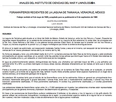
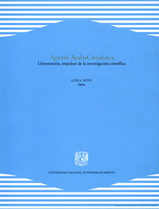

Referencias
Agustín Ayala Castañares
1925-2005
Agustín nació muy cerca del mar, en el puerto de Mazatlán, Sinaloa, y aunque desde muy pequeño se mudó a la Ciudad de México su vida siempre estuvo estrechamente ligada al mar.
Su pasión por las ciencias del mar comenzó cuando concluyó la carrera de biología en la Facultad de Ciencias de la UNAM (1950) pues casi de inmediato fue invitado a trabajar en PEMEX, donde se dedicó a estudiar un grupo de microorganismos llamados foramníferos, que viven en los sedimentos del fondo marino, muchas de interés petrolero.
Años más tarde se fue a Estados Unidos para hacer la maestría en Geología y Micropaleontología en la Universidad de Stanford y a tomar cursos especializados en la Universidad de California. En ese periodo, Agustín siguió estudiando los foramníferos, pero ahora de varias regiones del mundo. A su regreso, hizo el doctorado en Biología en la Facultad de Ciencias de la UNAM.
Agustín era serio, hiperactivo, de ágil memoria, comprometido y tenía una capacidad de organización extraordinaria, características que lo llevaron a ocupar distintos cargos administrativos, nacionales como internacionales, desde donde mejoró la infraestructura y las condiciones para la investigación científica en distintas partes del país.
En la UNAM, por ejemplo, fue director del Instituto de Biología y del Instituto de Ciencias del Mar y Limnología, así como coordinador de la Investigación Científica. En la UNESCO, representó a México en distintos foros internacionales, algunos de los cuales, condujeron a la aprobación de la Convención del Derecho del Mar, un instrumento jurídico de la mayor importancia para la comunidad internacional de los océanos.
Agustín fue un convencido de que el mar es vital para el desarrollo del país debido a sus muchísimos recursos, por eso se dedicó a impulsar su investigación, a formar profesionales en la materia en instituciones como la SEP, el IPN y la UNAM, así como promover estrategias de administración racional.
Aportación

Foraminíferos recientes de la Laguna de Tamiahua, Veracruz, México. Anales del Instituto de Ciencias del Mar y Limnología, UNAM

Luis A. Soto, Editor. Agustín Ayala Castañares, Universitario, impulsor de la investigación científica. UNAM